The Ares I Scale Model Acoustic Test (ASMAT) program was implemented to verify the Ares I Liftoff Acoustics (LOA) and Ignition Over-Pressure (IOP) environments.
These tests provided a well documented set of high fidelity acoustic measurements useful for validation, including data taken over a range of test conditions.
A digital representation of the test setup was constructed and test firings of the motor were simulated using Loci/CHEM
Results with the rocket in held down and elevated configurations, as well as with and without water suppression were compared to acoustic data.
The results showed good correlation with the amplitude and temporal shape of pressure features.
Five (5) images and an animation showing the ASMAT test configuration, test samples, and infrared imagery, including: The full scale Ares 1-X rocket vs 5% scale model, the ground support equipment, a held down firing, an elevated firing, frames of the firing in the infrared spectrum, and an animation of the infrared imagery.
The full scale Ares 1-X rocket on the launch pad next to the 5% scale model ASMAT.
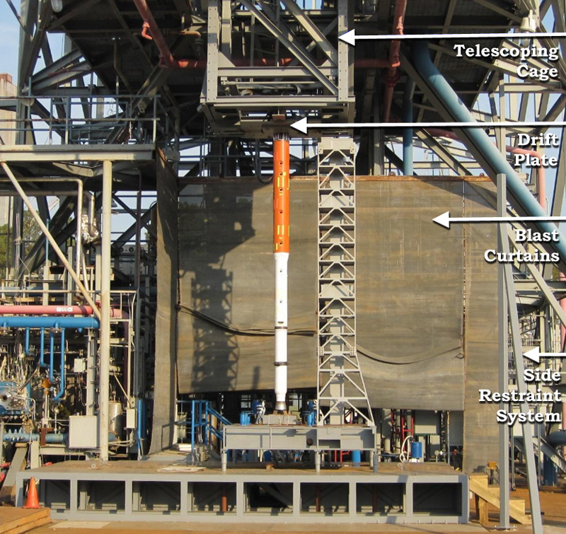
ASMAT ground support equipment. The test had a telescoping cage that could lift the vehicle to different heights to simulate liftoff.
Held down firing of ASMAT at Marshall Space Flight Center Test Stand 116. The full test matrix had heights at 0 ft, 2.5 ft, 5 ft, 7.5 ft, and 10 ft + drift + water variations.
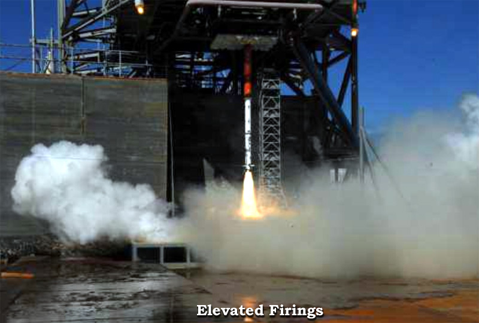
Elevated firing of ASMAT at Marshall Space Flight Center Test Stand 116. The full test matrix had heights at 0 ft, 2.5 ft, 5 ft, 7.5 ft, and 10 ft + drift + water variations.
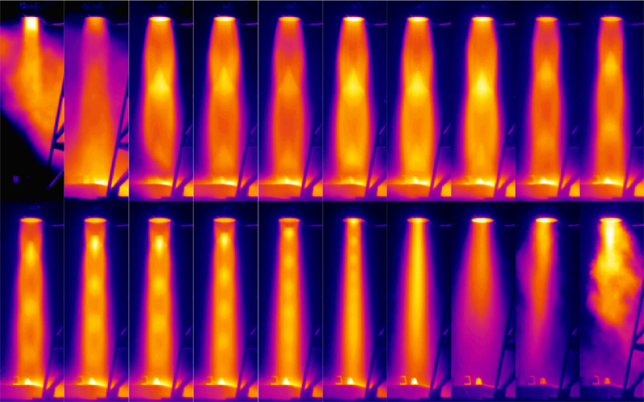
Infrared imagery of the ASMAT plume taken during ASMAT test 7 with SC655 Camera.
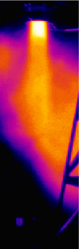
Animation of the infrared imagery of the ASMAT plume taken during ASMAT test 7 with SC655 Camera.
Five (5) images showing the features of ASMAT and test hardware used for CFD data and validation, including: the main ASMAT features, the microphones used, the overhead cameras available, the ground cameras, and the infrared ground cameras.
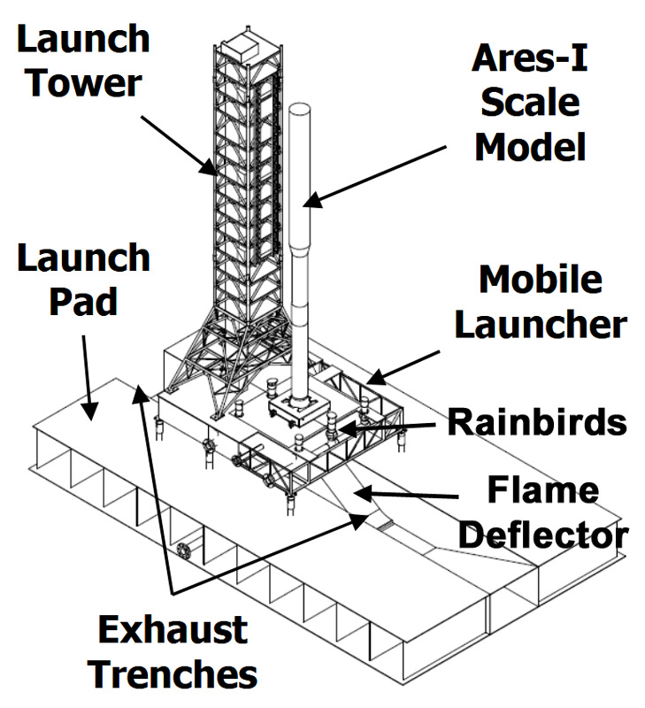
ASMAT 5% scale model test configuration features.
Microphones and corresponding probes used for the simulation. IOP corresponds to Ignition Over-Pressure, the initial blast wave at rocket ignition.
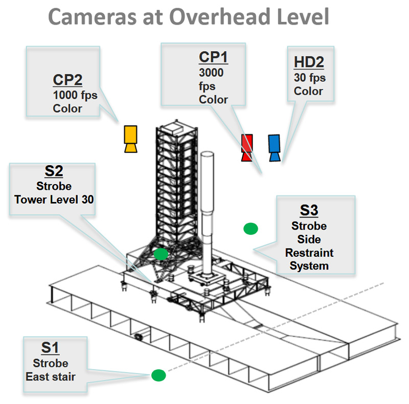
Cameras at overhead level. Cameras had many purposes including: Recording the hotfire, timing the hotfire with strobes, resolving test failures, and supporting CFD modeling.
Cameras at ground level. Cameras had many purposes including: Recording the hotfire, timing the hotfire with strobes, resolving test failures, and supporting CFD modeling.
Infrared Cameras at ground level. Infrared cameras were meant to provide support data for the validation, improve analysis data, and and corollate plume size with noise suppression achieved by water sound suppression.
Eight (8) images illustrating the CAD model source for the ASMAT simulation, the resulting CFD mesh, and quality of the mesh relative to the flow involved, including: the full CAD model, the simplified model, the simulation bounds, the nozzle and launch mount features, the full bounds mesh, the initial trench mesh, the refined trench mesh, and the CFL fluid velocity vs cell size and time step conditions.
Full CAD model for ASMAT test setup
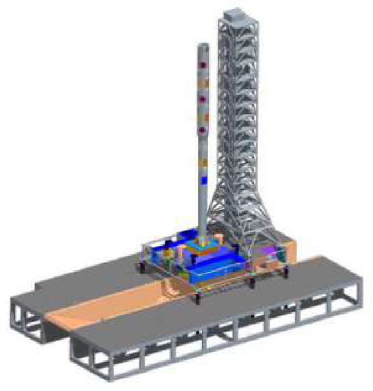
Simplified CAD model for ASMAT test setup after visiting test pad and taking pictures to understand important features
ASMAT simulation bounds. ANSA was used to divide the model into components, create a mesh, and place structure within a computational domain.
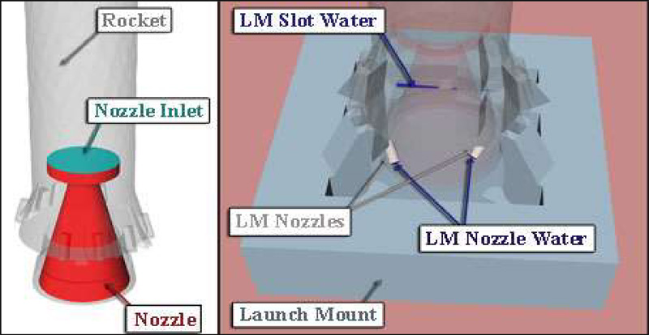
Detail view of CAD model features within the rocket nozzle and launch mount.
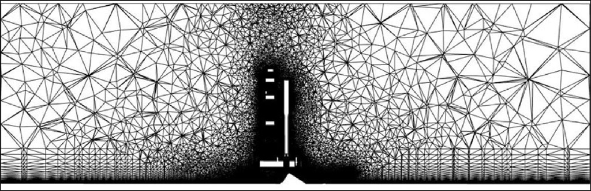
Section of volume mesh through vehicle and flame trench. At large distances the mesh quickly drops to a very low resolution, due to lack of applicability for acoustic environments, and changes made to the plume path and tower cells for the refined mesh were only slightly visible.
Section of volume mesh in the vicinity of active trench region – Initial Mesh. The focus is on the critical areas within the plume core, below the deck, and just above the deck surface, with an order of magnitude difference in cell size between the upper and lower trench, and a lack of resolution near the exit of the plume hole.
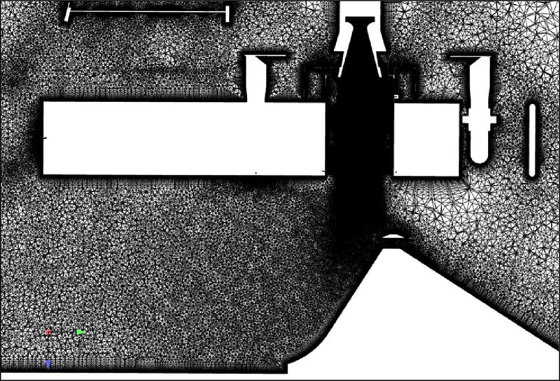
Section of volume mesh in the vicinity of active trench region – Refined Mesh. Issues with cell size near the plume hole were repaired, with a high density path column present up to the point of impact with the deflector, and a smooth cell size throughout the trench.
Courant-Friedrichs-Lewy (CFL) numbers for the simulation at completion. Near vehicle regions exhibit CFL numbers of 1-10, near plume regions 10-100, and internal plume features 100-1000. Calculations used an implicit method with adjustable time steps that meant near plume and internal plume features required extremely small time steps calculated many times relative to the larger mesh.
Three (3) images describing the mass flow rate inputs, difficulties with timing, and changes made to model the sharp starting transient, including: the basic profile, the various methods used to deal with the transient, and comparison to experimental data.
Input curve for the mass flow rate in the nozzle chamber. Samples were taken every 2.5 ms prior to 0.06 seconds and every 12.5 ms after.
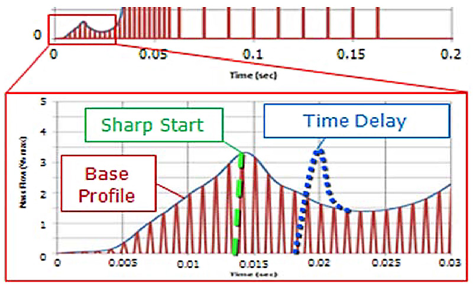
Methods of Modeling Ignition Transient. The first method was a sharp start of mass flow (green line) at the point of maximum pressure during ignition. This reproduced the transient effects at motor start, but resulted in flow, and signals, too early. The second method used a time delay (blue line) of ~5 ms, resulting in the main mass flow peak shifting ~20 ms after simulation start.
Pressure rise rate timing of the motor compared to transducer oscillations in the nozzle for the actual test. This provided experimental evidence of the pressure buildup and propagation delay prior to throat plug loss in the test hardware.
🗼 NASA, ASMAT, CFD Pressure Waves, Initial and Refined Simulations
🕵🏻
G. C. Putnam
🛈
Four (4) images and three (3) videos showing the time progression of the simulation and comparing the initial and refined results, including: the initial results progression, the refined results progression, a comparison of the shock trains, a comparison of plume behavior, animations of the initial and refined results, and a full bounds animation of the refined results (shown as a NASA Booth demo at Supercomputing 11.
Time Progression of Pressure Waves in Initial Pathfinder Simulation
Time Progression of Pressure Waves in Refined Pathfinder Simulation
Comparison of Initial Pressure Shock Train Behavior between Simulations
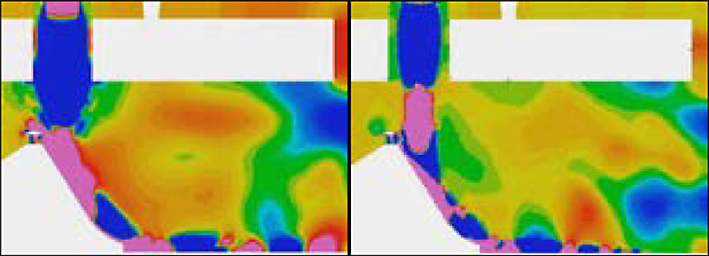
Comparison of Plume Behavior and Trench Wall Attachment Between Simulations
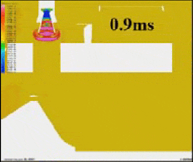
Animation of Pressure Waves in Initial Pathfinder Simulation
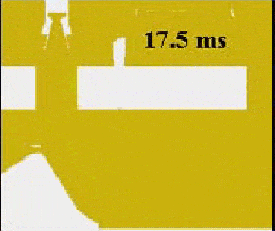
Animation of Pressure Waves in Initial Pathfinder Simulation
Animation of pressure contours through the centerline of the simulation as the rocket ignites, the ignition overpressure propagates, and the plume stabilizes, Supercomputing 11 Demo